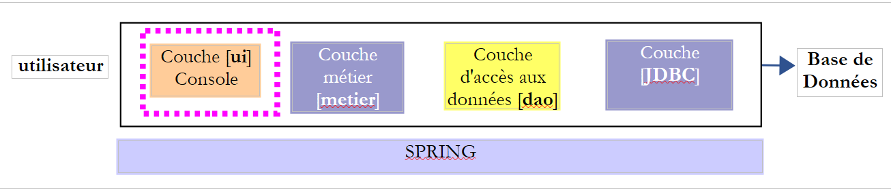
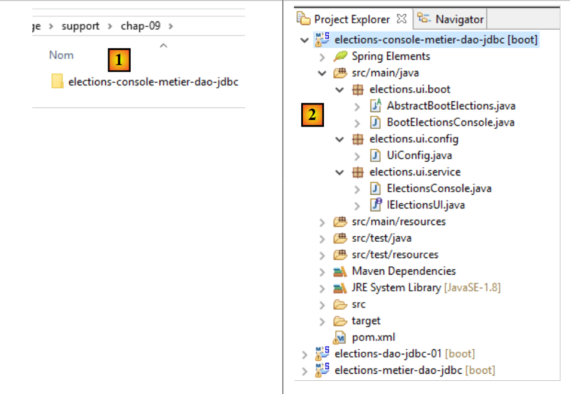
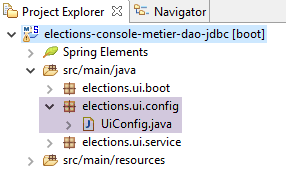
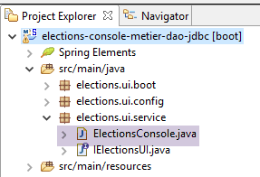

9. [TD]: Implementação da camada [ui] com um programa de consola
Palavras-chave: arquitetura multicamadas, Spring, injeção de dependências.
 |
9.1. Support
 |
No [1], a pasta [support / chap-09] contém o projeto Eclipse da camada [UI] da aplicação de consola.
9.2. Configuração do Maven
O projeto Eclipse [elections-ui-metier-dao-jdbc] é configurado pelo seguinte ficheiro Maven [pom.xml]:
<project xmlns="http://maven.apache.org/POM/4.0.0" xmlns:xsi="http://www.w3.org/2001/XMLSchema-instance"
xsi:schemaLocation="http://maven.apache.org/POM/4.0.0 http://maven.apache.org/xsd/maven-4.0.0.xsd">
<modelVersion>4.0.0</modelVersion>
<groupId>istia.st.elections</groupId>
<artifactId>elections-ui-metier-dao-jdbc</artifactId>
<version>0.0.1-SNAPSHOT</version>
<name>elections-ui-metier-dao-jdbc</name>
<parent>
<groupId>org.springframework.boot</groupId>
<artifactId>spring-boot-starter-parent</artifactId>
<version>1.2.7.RELEASE</version>
</parent>
<properties>
<project.build.sourceEncoding>UTF-8</project.build.sourceEncoding>
<java.version>1.8</java.version>
</properties>
<dependencies>
<!-- função -->
<dependency>
<groupId>istia.st.elections</groupId>
<artifactId>elections-metier-dao-jdbc</artifactId>
<version>0.0.1-SNAPSHOT</version>
</dependency>
<!-- Spring Boot -->
<dependency>
<groupId>org.springframework.boot</groupId>
<artifactId>spring-boot</artifactId>
<scope>test</scope>
</dependency>
<!-- Teste do Spring Boot -->
<dependency>
<groupId>org.springframework.boot</groupId>
<artifactId>spring-boot-starter-test</artifactId>
<scope>test</scope>
</dependency>
</dependencies>
<!-- plugins -->
<build>
<plugins>
<plugin>
<artifactId>maven-assembly-plugin</artifactId>
<configuration>
<archive>
<manifest>
<mainClass>config.AppConfig</mainClass>
</manifest>
</archive>
<descriptorRefs>
<descriptorRef>jar-with-dependencies</descriptorRef>
</descriptorRefs>
</configuration>
</plugin>
<!-- para a instalação do artefacto do projeto no repositório local do Maven -->
<plugin>
<groupId>org.apache.maven.plugins</groupId>
<artifactId>maven-surefire-plugin</artifactId>
<version>2.18.1</version>
</plugin>
</plugins>
</build>
</project>
- linhas 22-26: importa-se o arquivo da camada [métier] e, por consequência, o da camada [DAO];
9.3. Configuração do Spring
 |
A classe [UiConfig] configura a aplicação Spring:
package elections.ui.config;
import org.springframework.context.annotation.ComponentScan;
import org.springframework.context.annotation.Import;
import elections.metier.config.MetierConfig;
@Import(MetierConfig.class)
@ComponentScan(basePackages = { "elections.ui.service" })
public class UiConfig {
}
- linha 8: importam-se os beans definidos na camada [métier]. Esta já importava os beans definidos na camada [DAO]. Assim, temos aqui acesso aos beans das três camadas;
- linha 9: o pacote [elections.ui.service] contém outros beans;
9.4. A interface da camada [UI]
 |
Para compreender como pode ser a interface Java da camada [UI], precisamos de saber quem irá utilizar essa interface. Não se trata do utilizador do esquema acima, mas sim do programa que irá iniciar a aplicação na sua totalidade.
 |
A interface [IElectionsUI] é apresentada ao programa principal [main], que irá iniciar a aplicação. O que pode o [main] solicitar à camada [ui]? Pode solicitar-lhe que inicie a interação com o utilizador que irá introduzir os dados em falta relativos à eleição. Adotaremos a seguinte interface mínima:
package istia.st.elections.ui;
public interface IElectionsUI {
/**
* lance le dialogue avec l'utilisateur
*/
public void run();
}
- linha 7: a interface tem apenas um único método: run. Ao chamar este método, solicita-se à camada [ui] que inicie a interação com o utilizador.
9.5. A classe de inicialização da aplicação
 |
A classe de inicialização da aplicação é uma classe Java que possui um método estático [main]. Este método deve criar instâncias das camadas [ui, metier, demo] e solicitar à camada [ui] que inicie o diálogo com o utilizador. Esta classe poderia ser a seguinte classe [AbstractBootElections]:
package elections.ui.boot;
import org.springframework.context.annotation.AnnotationConfigApplicationContext;
import elections.dao.entities.ElectionsException;
import elections.ui.config.UiConfig;
import elections.ui.service.IElectionsUI;
public abstract class AbstractBootElections {
// recuperação do contexto Spring
protected AnnotationConfigApplicationContext ctx;
public void run() {
// instanciação da camada [ui]
IElectionsUI electionsUI = null;
try {
// recuperação do contexto Spring
ctx = new AnnotationConfigApplicationContext(UiConfig.class);
// recuperação da camada [ui]
electionsUI = getUI();
} catch (RuntimeException ex) {
// notificação do erro
afficheExceptions("Les erreurs suivantes se sont produites :", ex);
// a aplicação é encerrada
System.exit(1);
}
// execução da camada [ui]
try {
electionsUI.run();
} catch (ElectionsException ex2) {
// o erro é sinalizado
afficheExceptions("Les erreurs suivantes se sont produites :", ex2);
// a aplicação é encerrada
System.exit(3);
} catch (RuntimeException ex1) {
// o erro é comunicado
afficheExceptions("Les erreurs suivantes se sont produites :", ex1);
// a aplicação é encerrada
System.exit(2);
}
}
protected abstract IElectionsUI getUI();
private void afficheExceptions(String message, ElectionsException ex) {
// é apresentada a mensagem
System.out.println(String.format("%s -------------", message));
System.out.println(String.format("Code erreur : %d", ex.getCode()));
// são apresentados os erros
for (String erreur : ex.getErreurs()) {
System.out.println(String.format("-- %s", erreur));
}
}
public void afficheExceptions(String message, Exception ex) {
// exibe-se a mensagem
System.out.println(String.format("%s -------------", message));
// exibe a pilha de exceções
Throwable cause = ex;
while (cause != null) {
System.out.println(String.format("-- %s", cause.getMessage()));
cause = cause.getCause();
}
}
}
- linha 19: o contexto Spring é instanciado: todos os beans definidos nos diferentes ficheiros de configuração serão criados;
- linha 21: obtém-se uma referência ao bean que implementa a interface [IElectionsUI]. Vamos implementar a interface [IElectionsUI] através de dois beans:
- [ElectionsConsole] para uma aplicação de consola;
- [ElectionsSwing] para uma aplicação Swing;
O método [getUI] é abstrato (linha 44). Com efeito, a classe [AbstractBootElections] será a classe pai de duas classes:
- [BootElectionsConsole], que fornecerá o bean [ElectionsConsole] à sua classe pai;
- [BootElectionsSwing], que fornecerá o bean [ElectionsSwing] à sua classe pai;
- linha 30: o método [run] da interface é executado;
As exceções são geridas em vários pontos:
- linhas 22-27: pode ocorrer uma exceção durante a instanciação do contexto Spring;
- linhas 31-41: pode ocorrer uma exceção durante a execução da camada [UI]. Distinguem-se dois tipos de exceção:
- a classe [ElectionsException], lançada pela camada [DAO];
- a classe [RuntimeException] para as restantes exceções que possam ocorrer durante a execução;
A classe [BootElectionsConsole] é a classe que inicia a implementação da consola. O seu código é o seguinte:
package elections.ui.boot;
import elections.ui.service.IElectionsUI;
public class BootElectionsConsole extends AbstractBootElections{
public static void main(String[] arguments) {
new BootElectionsConsole().run();
}
@Override
protected IElectionsUI getUI() {
return ctx.getBean("electionsConsole",IElectionsUI.class);
}
}
- na linha 5, a classe [BootElectionsConsole] estende a classe [AbstractBootElections]. Por conseguinte, deve implementar o método [getUI] que a sua classe pai tinha declarado como abstrato;
- linhas 10-13: implementação do método [getUI];
- linha 12: define-se o bean denominado [electionsConsole] como implementador da interface [IElectionsUI]. [ctx] é o contexto Spring definido na classe pai pela declaração:
// recuperação do contexto Spring
protected AnnotationConfigApplicationContext ctx;
Como o campo possui o atributo [protected], está visível nas classes filhas.
O bean da linha 12 será declarado da seguinte forma:
@Component
public class ElectionsConsole implements IElectionsUI {
O nome por predefinição deste bean é o nome da classe com a primeira letra em minúscula. É possível ignorar este nome por predefinição escrevendo explicitamente:
A classe [BootElectionsSwing], que executaria a implementação Swing, poderia ser a seguinte:
package elections.ui.boot;
import elections.ui.service.IElectionsUI;
public class BootElectionsSwing extends AbstractBootElections {
public static void main(String[] arguments) {
new BootElectionsSwing().run();
}
@Override
protected IElectionsUI getUI() {
return ctx.getBean("electionsSwing", IElectionsUI.class);
}
}
Este modelo de conceção, em que se agrupa o comportamento comum às classes numa classe-pai e se deixa que as classes-filhas implementem os detalhes que lhes são específicos, denomina-se modelo de conceção Strategy. Este modelo de conceção impõe um comportamento comum a todas as classes-filhas.
9.6. A classe de implementação [ElectionsConsole]
 |
A nossa primeira classe de implementação da camada [ui] será uma classe que utiliza a consola para comunicar com o utilizador. Eis um exemplo de diálogo obtido na consola do Eclipse:
Il y a 7 listes en compétition. Veuillez indiquer le nombre de voix de chacune d'elles :
Nombre de voix de la liste [A] : 2500
Nombre de voix de la liste [B] : 4500
Nombre de voix de la liste [C] : x
Nombre de voix incorrect. Veuillez recommencer
Nombre de voix de la liste [C] : 8000
Nombre de voix de la liste [D] : 12000
Nombre de voix de la liste [E] : 16000
Nombre de voix de la liste [F] : 25000
Nombre de voix de la liste [G] : 32000
Résultats de l'élection
[G,32000,2,false]
[F,25000,2,false]
[E,16000,1,false]
[D,12000,1,false]
[C,8000,0,false]
[B,4500,0,true]
[A,2500,0,true]
A classe [ElectionsConsole] poderia ter a seguinte estrutura:
package elections.ui.service;
import java.util.Comparator;
import java.util.Scanner;
import org.springframework.beans.factory.annotation.Autowired;
import org.springframework.stereotype.Component;
import elections.dao.entities.ListeElectorale;
import elections.metier.service.IElectionsMetier;
@Component
public class ElectionsConsole implements IElectionsUI {
@Autowired
private IElectionsMetier electionsMetier;
@Override
public void run() {
// introdução de dados
try (Scanner clavier = new Scanner(System.in)) {
// solicita-se as listas em competição à camada [metier]
// efetua-se a contagem dos votos
}
// cálculo dos lugares
// regista-se os resultados
// ordena-se as listas por ordem decrescente de votos
// são apresentadas
}
// classe de comparação de listas eleitorais
class CompareListesElectorales implements Comparator<ListeElectorale> {
// comparação de duas listas de candidatos com base no número de votos
@Override
public int compare(ListeElectorale listeElectorale1, ListeElectorale listeElectorale2) {
// compara-se o número de votos destas duas listas
int nbVoix1 = listeElectorale1.getVoix();
int nbVoix2 = listeElectorale2.getVoix();
if (nbVoix1 < nbVoix2) {
return +1;
} else {
if (nbVoix1 > nbVoix2)
return -1;
else
return 0;
}
}
}
}
- linha 12: a classe [ElectionsConsole] é um componente Spring;
- linha 13: a classe implementa a interface [IElectionsUI]
- linhas 15-16: injeção pelo Spring de uma referência na camada [metier];
- linhas 18-34: o método [run] da interface [IelectionsUI];
O try das linhas 21-28 chama-se try-with-resources e a sua sintaxe é a seguinte:
O recurso da linha 1 deve implementar a interface [java.lang.AutoCloseable]. O recurso é aberto na linha 1 e fechado automaticamente após a linha 3, independentemente de ocorrer ou não uma exceção no código executado entre as duas linhas. Esta sintaxe permite garantir que um recurso aberto será efetivamente fechado, aconteça o que acontecer.
Tarefa a realizar: escreva o código do método [run]. Utilize os comentários como ajuda.